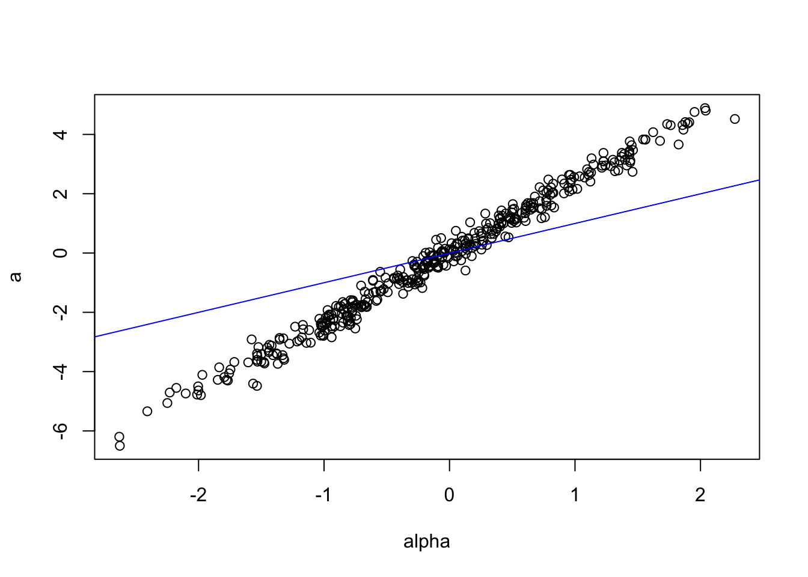
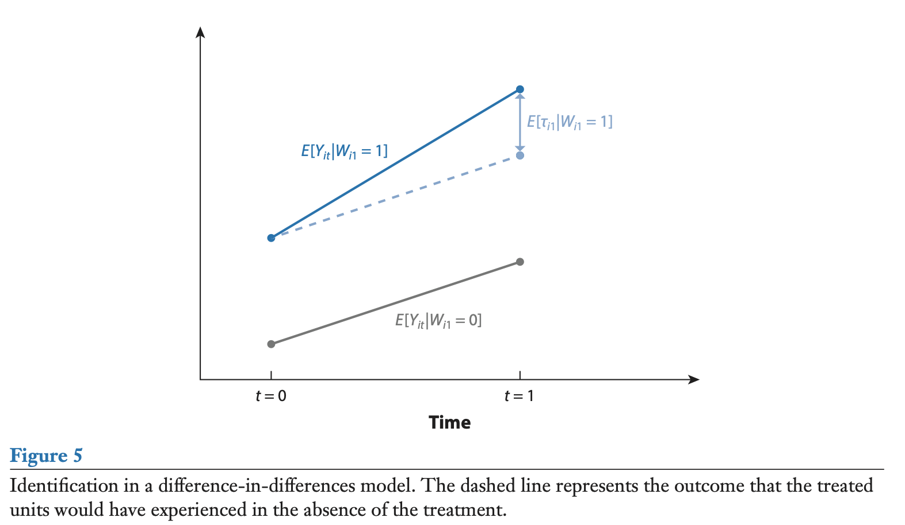
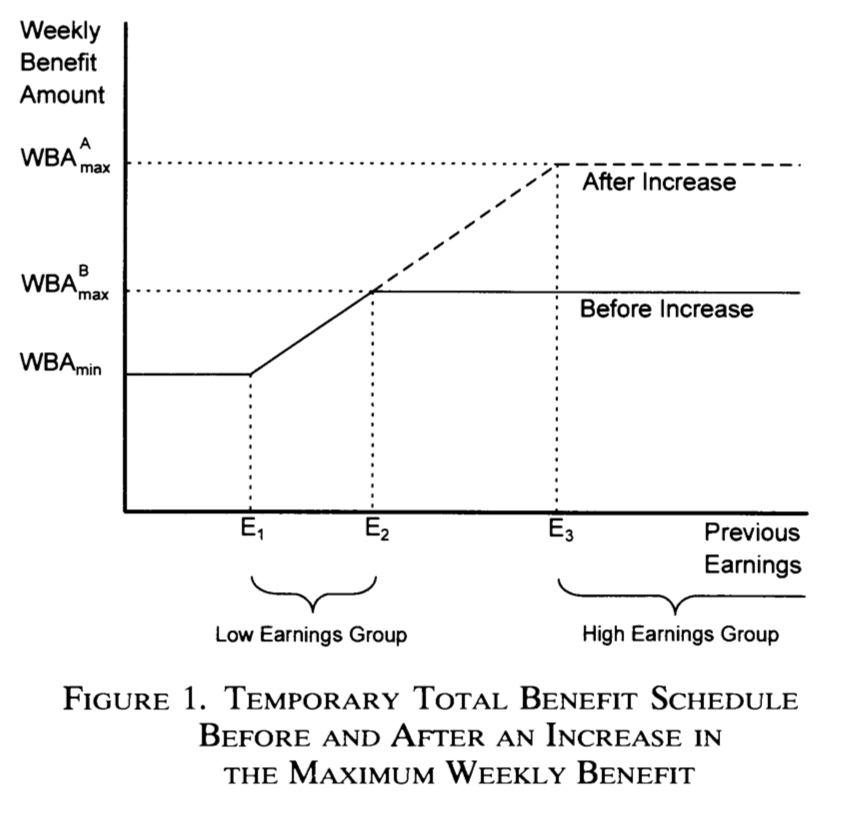

Chapter 5 Panel regressions
5.1 Specification and notations
A standard panel situation is as follows: the sample covers a lot of “entities”, indexed by \(i \in \{1,\dots,n\}\), with \(n\) large, and, for each entity, we observe different variables over a small number of periods \(t \in \{1,\dots,T\}\). This is a longitudinal dataset.
The linear panel regression model is: \[\begin{equation} y_{i,t} = \mathbf{x}'_{i,t}\underbrace{\boldsymbol\beta}_{K \times 1} + \underbrace{\mathbf{z}'_{i}\boldsymbol\alpha}_{\mbox{Individual effects}} + \varepsilon_{i,t}.\tag{5.1} \end{equation}\]
When running panel regressions, the usual objective is to estimate \(\boldsymbol\beta\).
Figure 5.1 illustrates a panel-data situation. The model is \(y_i = \alpha_i + \beta x_{i,t} + \varepsilon_{i,t}\), \(t \in \{1,2\}\). On Panel (b), blue dots are for \(t=1\), red dots are for \(t=2\). The lines relate the dots associated with the same entity \(i\). What is remarkable in the simulated model is that, while the unconditional correlation between \(y\) and \(x\) is negative, the conditional correlation (conditional on \(\alpha_i\)) is positive. Indeed, the sign of this conditional correlation is the sign of \(\beta\), which is positive in th simulated example (\(\beta=5\)). In other words, if one did not know the panel nature of the data, that would be tempting to say that \(\beta<0\), but this is not the case, due to fixed effects (the \(\alpha_i\)’s) that are negatively correlated to the \(x_i\)’s.
Code
T <- 2; n <- 12 # 2 periods and 12 entities
alpha <- 5*rnorm(n) # draw fixed effects
x.1 <- rnorm(n) - .5*alpha # note: x_i's correlate to alpha_i's
x.2 <- rnorm(n) - .5*alpha
beta <- 5; sigma <- .3
y.1 <- alpha + x.1 + sigma*rnorm(n);y.2 <- alpha + x.2 + sigma*rnorm(n)
x <- c(x.1,x.2) # pooled x
y <- c(y.1,y.2) # pooled y
par(mfrow=c(1,2))
plot(x,y,col="black",pch=19,xlab="x",ylab="y",main="(a)")
plot(x,y,col="black",pch=19,xlab="x",ylab="y",main="(b)")
points(x.1,y.1,col="blue",pch=19);points(x.2,y.2,col="red",pch=19)
for(i in 1:n){lines(c(x.1[i],x.2[i]),c(y.1[i],y.2[i]))}
Figure 5.1: The data are the same for both panels. On Panel (b), blue dots are for \(t=1\), red dots are for \(t=2\). The lines relate the dots associated to the same entity \(i\).
Figure 5.2 presents the same type of plot based on the Cigarette Consumption Panel dataset (CigarettesSW dataset, used in J. Stock and Watson (2003)). This dataset documents the average consumption of cigarettes in 48 continental US states for two dates (1985 and 1995).

Figure 5.2: Cigarette consumption versus real price in the CigarettesSW panel dataset.
We will make use of the following notations: \[ \mathbf{y}_i = \underbrace{\left[ \begin{array}{c} y_{i,1}\\ \vdots\\ y_{i,T} \end{array}\right]}_{T \times 1}, \quad \boldsymbol\varepsilon_i = \underbrace{\left[ \begin{array}{c} \varepsilon_{i,1}\\ \vdots\\ \varepsilon_{i,T} \end{array}\right]}_{T \times 1}, \quad \mathbf{x}_i = \underbrace{\left[ \begin{array}{c} \mathbf{x}_{i,1}'\\ \vdots\\ \mathbf{x}_{i,T}' \end{array}\right]}_{T \times K}, \quad \mathbf{X} = \underbrace{\left[ \begin{array}{c} \mathbf{x}_{1}\\ \vdots\\ \mathbf{x}_{n} \end{array}\right]}_{(nT) \times K}. \] \[ \tilde{\mathbf{y}}_i = \left[ \begin{array}{c} y_{i,1} - \bar{y}_i\\ \vdots\\ y_{i,T} - \bar{y}_i \end{array}\right], \quad \tilde{\boldsymbol\varepsilon}_i = \left[ \begin{array}{c} \varepsilon_{i,1} - \bar{\varepsilon}_i\\ \vdots\\ \varepsilon_{i,T} - \bar{\varepsilon}_i \end{array}\right], \] \[ \tilde{\mathbf{x}}_i = \left[ \begin{array}{c} \mathbf{x}_{i,1}' - \bar{\mathbf{x}}_i'\\ \vdots\\ \mathbf{x}_{i,T}' - \bar{\mathbf{x}}_i' \end{array}\right], \quad \tilde{\mathbf{X}} = \left[ \begin{array}{c} \tilde{\mathbf{x}}_{1}\\ \vdots\\ \tilde{\mathbf{x}}_{n} \end{array}\right], \quad \tilde{\mathbf{Y}} = \left[ \begin{array}{c} \tilde{\mathbf{y}}_{1}\\ \vdots\\ \tilde{\mathbf{y}}_{n} \end{array}\right], \] where \[ \bar{y}_i = \frac{1}{T} \sum_{t=1}^T y_{i,t}, \quad \bar{\varepsilon}_i = \frac{1}{T}\sum_{t=1}^T \varepsilon_{i,t} \quad \mbox{and} \quad \bar{\mathbf{x}}_i = \frac{1}{T}\sum_{t=1}^T \mathbf{x}_{i,t}. \]
5.2 Three standard cases
There are three typical situations:
- Pooled regression: \(\mathbf{z}_i \equiv 1\). This case amounts to the case studied in Chapter 4.
- Fixed Effects (Section 5.3): \(\mathbf{z}_i\) is unobserved, but correlates with \(\mathbf{x}_i\) \(\Rightarrow\) \(\mathbf{b}\) is biased and inconsistent in the OLS regression of \(\mathbf{y}\) on \(\mathbf{X}\) (omitted variable, see Section 4.3.2).
- Random Effects (Section 5.4): \(\mathbf{z}_i\) is unobserved, but uncorrelated with \(\mathbf{x}_i\). The model writes: \[ y_{i,t} = \mathbf{x}'_{i,t}\boldsymbol\beta + \alpha + \underbrace{{\color{blue}u_i + \varepsilon_{i,t}}}_{\mbox{compound error}}, \] where \(\alpha = \mathbb{E}(\mathbf{z}'_{i}\boldsymbol\alpha)\) and \(u_i = \mathbf{z}'_{i}\boldsymbol\alpha - \mathbb{E}(\mathbf{z}'_{i}\boldsymbol\alpha) \perp \mathbf{x}_i\). In that case, the OLS is consistent, but not efficient. GLS can be used to gain efficiencies over OLS (see Section 4.5.2 for a presentation of the GLS approach).
5.3 Estimation of Fixed-Effects Models
Hypothesis 5.1 (Fixed-effect model) We assume that:
- There is no perfect multicollinearity among the regressors.
- \(\mathbb{E}(\varepsilon_{i,t}|\mathbf{X})=0\), for all \(i,t\).
- We have: \[ \mathbb{E}(\varepsilon_{i,t}\varepsilon_{j,s}|\mathbf{X}) = \left\{ \begin{array}{cl} \sigma^2 & \mbox{if $i=j$ and $s=t$},\\ 0 & \mbox{otherwise.} \end{array}\right. \]
These assumptions are analogous to those introduced in the standard linear regression:
- \(\leftrightarrow\) Hyp. 4.1, (ii) \(\leftrightarrow\) Hyp. 4.2, (iii) \(\leftrightarrow\) Hyp. 4.3 + 4.4.
In matrix form, for a given \(i\), the model writes: \[ \mathbf{y}_i = \mathbf{x}_i \boldsymbol\beta + \mathbf{1}_T\alpha_i + \boldsymbol\varepsilon_i, \] where \(\mathbf{1}_T\) is a \(T\)-dimensional vector of ones.
This is the Least Square Dummy Variable (LSDV) model: \[\begin{equation} \mathbf{y} = [\mathbf{X} \quad \mathbf{D}] \left[ \begin{array}{c} \boldsymbol\beta\\ \boldsymbol\alpha \end{array} \right] + \boldsymbol\varepsilon, \tag{5.2} \end{equation}\] with: \[ \mathbf{D} = \underbrace{ \left[\begin{array}{cccc} \mathbf{1}_T&\mathbf{0}&\dots&\mathbf{0}\\ \mathbf{0}&\mathbf{1}_T&\dots&\mathbf{0}\\ &&\vdots&\\ \mathbf{0}&\mathbf{0}&\dots&\mathbf{1}_T\\ \end{array}\right]}_{(nT \times n)}. \]
The linear regression (Eq. (5.2)) —with the dummy variables— satisfies the Gauss-Markov conditions (Theorem 4.1). Hence, in this context, the OLS estimator is the best linear unbiased estimator (BLUE).
Denoting by \(\mathbf{Z}\) the matrix \([\mathbf{X} \quad \mathbf{D}]\), and by \(\mathbf{b}\) and \(\mathbf{a}\) the respective OLS estimates of \(\boldsymbol\beta\) and of \(\boldsymbol\alpha\), we have: \[\begin{equation} \boxed{ \left[ \begin{array}{c} \mathbf{b}\\ \mathbf{a} \end{array} \right] = [\mathbf{Z}'\mathbf{Z}]^{-1}\mathbf{Z}'\mathbf{y}.} \tag{5.3} \end{equation}\]
The asymptotical distribution of \([\mathbf{b}',\mathbf{a}']'\) derives from the standard OLS context: Prop. 4.11 can be used after having replaced \(\mathbf{X}\) by \(\mathbf{Z}=[\mathbf{X} \quad \mathbf{D}]\).
We have: \[\begin{equation} \boxed{\sqrt{nT}\left(\left[ \begin{array}{c} \mathbf{b}\\ \mathbf{a} \end{array} \right]-\left[ \begin{array}{c} \boldsymbol\beta\\ \boldsymbol\alpha \end{array} \right]\right) \overset{d}{\rightarrow} \mathcal{N}\left( \mathbf{0}, \sigma^2 Q^{-1} \right),} \end{equation}\] where \[ Q = \mbox{plim}_{nT \rightarrow \infty} \frac{1}{nT} \mathbf{Z}'\mathbf{Z}, \] assuming the previous limit exists.
In practice, an estimator of the covariance matrix of \([\mathbf{b}',\mathbf{a}']'\) is: \[ s^2 \left( \mathbf{Z}'\mathbf{Z}\right)^{-1} \quad with \quad s^2 = \frac{\mathbf{e}'\mathbf{e}}{nT - K - n}, \] where \(\mathbf{e}\) is the \((nT) \times 1\) vector of OLS residuals.
There is an alternative way of expressing the LSDV estimators. It involves the residual-maker matrix matrix \(\mathbf{M_D}=Id - \mathbf{D}(\mathbf{D}'\mathbf{D})^{-1}\mathbf{D}'\) (see Eq. (4.3)), which acts as an operator that removes entity-specific means, i.e.: \[ \tilde{\mathbf{Y}} = \mathbf{M_D}\mathbf{Y}, \quad \tilde{\mathbf{X}} = \mathbf{M_D}\mathbf{X} \quad and \quad \tilde{\boldsymbol\varepsilon} = \mathbf{M_D}\boldsymbol\varepsilon. \]
With these notations, using the Frisch-Waugh theorem (Theorem 4.2), we get another expression for the estimator \(\mathbf{b}\) appearing in Eq. (5.3): \[\begin{equation} \boxed{\mathbf{b} = [\mathbf{X}'\mathbf{M_D}\mathbf{X}]^{-1}\mathbf{X}'\mathbf{M_D}\mathbf{y}.}\tag{5.4} \end{equation}\]
This amounts to regressing the \(\tilde{y}_{i,t}\)’s (\(= y_{i,t} - \bar{y}_i\)) on the \(\tilde{\mathbf{x}}_{i,t}\)’s (\(=\mathbf{x}_{i,t} - \bar{\mathbf{x}}_i\)).
The estimate of \(\boldsymbol\alpha\) is given by: \[\begin{equation} \boxed{\mathbf{a} = (\mathbf{D}'\mathbf{D})^{-1}\mathbf{D}'(\mathbf{y} - \mathbf{X}\mathbf{b}),} \tag{5.5} \end{equation}\] which is obtained by developing the second row of \[ \left[ \begin{array}{cc} \mathbf{X}'\mathbf{X} & \mathbf{X}'\mathbf{D}\\ \mathbf{D}'\mathbf{X} & \mathbf{D}'\mathbf{D} \end{array}\right] \left[ \begin{array}{c} \mathbf{b}\\ \mathbf{a} \end{array}\right] = \left[ \begin{array}{c} \mathbf{X}'\mathbf{Y}\\ \mathbf{D}'\mathbf{Y} \end{array}\right], \] which are the first-order conditions resulting from the least squares problem (see Eq. (4.2)).
One can use different types of fixed effects in the same regression. Typically, one can have time and entity fixed effects. In that case, the model writes: \[ y_{i,t} = \mathbf{x}_i'\boldsymbol\beta + \alpha_i + \gamma_t + \varepsilon_{i,t}. \]
The LSDV approach (Eq. (5.2)) can still be resorted to. It suffices to extend the \(\mathbf{Z}\) matrix with additional columns (then called time dummies): \[\begin{equation} \mathbf{y} = [\mathbf{X} \quad \mathbf{D} \quad \mathbf{C}] \left[ \begin{array}{c} \boldsymbol\beta\\ \boldsymbol\alpha\\ \boldsymbol\gamma \end{array} \right] + \boldsymbol\varepsilon, \tag{5.6} \end{equation}\] with: \[ \mathbf{C} = \left[\begin{array}{cccc} \boldsymbol{\delta}_1&\boldsymbol{\delta}_2&\dots&\boldsymbol{\delta}_{T-1}\\ \vdots&\vdots&&\vdots\\ \boldsymbol{\delta}_1&\boldsymbol{\delta}_2&\dots&\boldsymbol{\delta}_{T-1}\\ \end{array}\right], \] where the \(T\)-dimensional vector \(\boldsymbol\delta_t\) (the time dummy) is \[ [0,\dots,0,\underbrace{1}_{\mbox{t$^{th}$ entry}},0,\dots,0]'. \]
Using state and year fixed effects in the CigarettesSW panel dataset yields the following results:
Code
data("CigarettesSW", package = "AER")
CigarettesSW$rprice <- with(CigarettesSW, price/cpi) # compute real price
CigarettesSW$rincome <- with(CigarettesSW, income/population/cpi)
eq.pooled <- lm(log(packs)~log(rprice)+log(rincome),data=CigarettesSW)
eq.LSDV <- lm(log(packs)~log(rprice)+log(rincome)+state,
data=CigarettesSW)
CigarettesSW$year <- as.factor(CigarettesSW$year)
eq.LSDV2 <- lm(log(packs)~log(rprice)+log(rincome)+state+year,
data=CigarettesSW)
model_table(eq.pooled,eq.LSDV,eq.LSDV2,no.space = TRUE,
omit=c("state","year"),
add.lines=list(c('State FE','No','Yes','Yes'),
c('Year FE','No','No','Yes')),
omit.stat=c("f","ser"))| Dependent variable: | |||
| log(packs) | |||
| (1) | (2) | (3) | |
| log(rprice) | -1.334*** | -1.210*** | -1.056*** |
| (0.135) | (0.114) | (0.149) | |
| log(rincome) | 0.318** | 0.121 | 0.497 |
| (0.136) | (0.190) | (0.304) | |
| Constant | 10.067*** | 9.954*** | 8.360*** |
| (0.516) | (0.264) | (1.049) | |
| State FE | No | Yes | Yes |
| Year FE | No | No | Yes |
| Observations | 96 | 96 | 96 |
| R2 | 0.552 | 0.966 | 0.967 |
| Adjusted R2 | 0.542 | 0.929 | 0.931 |
| Note: | p<0.1; p<0.05; p<0.01 | ||
Example 5.1 (Housing prices and interest rates) In this example, we want to estimate the effect of short and long-term interest rate on housing prices. The data come from the Jordà, Schularick, and Taylor (2017) dataset (see this website).
Code
library(AEC);library(sandwich)
data(JST); JST <- subset(JST,year>1950);N <- dim(JST)[1]
JST$hpreal <- JST$hpnom/JST$cpi # real house price index
JST$dhpreal <- 100*log(JST$hpreal/c(NaN,JST$hpreal[1:(N-1)]))
# Put NA's when change in country:
JST$dhpreal[c(0,JST$iso[2:N]!=JST$iso[1:(N-1)])] <- NaN
JST$dhpreal[abs(JST$dhpreal)>30] <- NaN # remove extreme price change
JST$YEAR <- as.factor(JST$year) # to have time fixed effects
eq1_noFE <- lm(dhpreal ~ stir + ltrate,data=JST)
eq1_FE <- lm(dhpreal ~ stir + ltrate + iso + YEAR,data=JST)
eq2_noFE <- lm(dhpreal ~ I(ltrate-stir),data=JST)
eq2_FE <- lm(dhpreal ~ I(ltrate-stir) + iso + YEAR,data=JST)
model_table(eq1_noFE, eq1_FE, eq2_noFE, eq2_FE, column.labels = c("no FE", "with FE", "no FE","with FE"),
omit = c("iso","YEAR","Constant"),keep.stat = "n",
add.lines=list(c('Country FE','No','Yes','No','Yes'),
c('Year FE','No','Yes','No','Yes')))| Dependent variable: | ||||
| dhpreal | ||||
| no FE | with FE | no FE | with FE | |
| (1) | (2) | (3) | (4) | |
| stir | 0.485*** | 0.532*** | ||
| (0.114) | (0.134) | |||
| ltrate | -0.690*** | -0.384*** | ||
| (0.127) | (0.145) | |||
| I(ltrate - stir) | -0.476*** | -0.475*** | ||
| (0.115) | (0.125) | |||
| Country FE | No | Yes | No | Yes |
| Year FE | No | Yes | No | Yes |
| Observations | 1,141 | 1,141 | 1,141 | 1,141 |
| Note: | p<0.1; p<0.05; p<0.01 | |||
If we suspect heteroskedasticity and autocorrelation (HAC) in the residuals, we can apply cluster corrections (see Section 4.5.5):
Code
vcov_cluster1_noFE <- vcovCL(eq1_noFE, cluster = JST[, c("iso","YEAR")])
vcov_cluster1_FE <- vcovCL(eq1_FE, cluster = JST[, c("iso","YEAR")])
vcov_cluster2_noFE <- vcovCL(eq2_noFE, cluster = JST[, c("iso","YEAR")])
vcov_cluster2_FE <- vcovCL(eq2_FE, cluster = JST[, c("iso","YEAR")])
robust_se_FE1_noFE <- sqrt(diag(vcov_cluster1_noFE))
robust_se_FE1_FE <- sqrt(diag(vcov_cluster1_FE))
robust_se_FE2_noFE <- sqrt(diag(vcov_cluster2_noFE))
robust_se_FE2_FE <- sqrt(diag(vcov_cluster2_FE))
model_table(eq1_noFE, eq1_FE, eq2_noFE, eq2_FE, column.labels = c("no FE", "with FE", "no FE","with FE"),
omit = c("iso","YEAR","Constant"),keep.stat = "n",
add.lines=list(c('Country FE','No','Yes','No','Yes'),
c('Year FE','No','Yes','No','Yes')),
se = list(robust_se_FE1_noFE,robust_se_FE1_FE,
robust_se_FE2_noFE,robust_se_FE2_FE))| Dependent variable: | ||||
| dhpreal | ||||
| no FE | with FE | no FE | with FE | |
| (1) | (2) | (3) | (4) | |
| stir | 0.485* | 0.532** | ||
| (0.271) | (0.240) | |||
| ltrate | -0.690** | -0.384* | ||
| (0.269) | (0.200) | |||
| I(ltrate - stir) | -0.476* | -0.475** | ||
| (0.255) | (0.213) | |||
| Country FE | No | Yes | No | Yes |
| Year FE | No | Yes | No | Yes |
| Observations | 1,141 | 1,141 | 1,141 | 1,141 |
| Note: | p<0.1; p<0.05; p<0.01 | |||
5.4 Estimation of random effects models
Here, the individual effects are assumed to be not correlated to other variables (the \(\mathbf{x}_i\)’s). In that context, the OLS estimator is consistent. However, it is not efficient. The GLS approach can be employed to gain efficiency.
Random-effect models write: \[ y_{i,t}=\mathbf{x}'_{it}\boldsymbol\beta + (\alpha + \underbrace{u_i}_{\substack{\text{Random}\\\text{heterogeneity}}}) + \varepsilon_{i,t}, \] with \[\begin{eqnarray*} \mathbb{E}(\varepsilon_{i,t}|\mathbf{X})&=&\mathbb{E}(u_{i}|\mathbf{X}) =0,\\ \mathbb{E}(\varepsilon_{i,t}\varepsilon_{j,s}|\mathbf{X}) &=& \left\{ \begin{array}{cl} \sigma_\varepsilon^2 & \mbox{ if $i=j$ and $s=t$},\\ 0 & \mbox{ otherwise.} \end{array} \right.\\ \mathbb{E}(u_{i}u_{j}|\mathbf{X}) &=& \left\{ \begin{array}{cl} \sigma_u^2 & \mbox{ if $i=j$},\\ 0 & \mbox{otherwise.} \end{array} \right.\\ \mathbb{E}(\varepsilon_{i,t}u_{j}|\mathbf{X})&=&0 \quad \text{for all $i$, $j$ and $t$}. \end{eqnarray*}\]
Introducing the notations \(\eta_{i,t} = u_i + \varepsilon_{i,t}\) and \(\boldsymbol\eta_i = [\eta_{i,1},\dots,\eta_{i,T}]'\), we have \(\mathbb{E}(\boldsymbol\eta_i |\mathbf{X}) = \mathbf{0}\) and \(\mathbb{V}ar(\boldsymbol\eta_i | \mathbf{X}) = \boldsymbol\Gamma\), where \[ \boldsymbol\Gamma = \left[ \begin{array}{ccccc} \sigma_\varepsilon^2+\sigma_u^2 & \sigma_u^2 & \sigma_u^2 & \dots & \sigma_u^2\\ \sigma_u^2 & \sigma_\varepsilon^2+\sigma_u^2 & \sigma_u^2 & \dots & \sigma_u^2\\ \vdots && \ddots && \vdots \\ \sigma_u^2 & \sigma_u^2 & \sigma_u^2 & \dots & \sigma_\varepsilon^2+\sigma_u^2\\ \end{array} \right] = \sigma_\varepsilon^2Id_T + \sigma_u^2\mathbf{1}_T\mathbf{1}_T', \] where \(Id_T\) is the identity matrix of dimension \(T \times T\), and \(\mathbf{1}_T\) is a \(T\)-dimensional vector of ones.
Denoting by \(\boldsymbol\Sigma\) the covariance matrix of \(\boldsymbol\eta = [\boldsymbol\eta_1',\dots,\boldsymbol\eta_n']'\), we have: \[ \boldsymbol\Sigma = Id_n \otimes \boldsymbol\Gamma. \]
where \(Id_n\) is the identity matrix of dimension \(n \times n\).
If we knew \(\boldsymbol\Sigma\), we would apply (feasible) GLS (Eq. (4.29), in Section 4.5.2): \[ \boldsymbol\beta = (\mathbf{X}'\boldsymbol\Sigma^{-1}\mathbf{X})^{-1}\mathbf{X}'\boldsymbol\Sigma^{-1}\mathbf{y}. \] (As explained in Section 4.5.2, this amounts to regressing \({\boldsymbol\Sigma^{-1/2}}'\mathbf{y}\) on \({\boldsymbol\Sigma^{-1/2}}'\mathbf{X}\).)
It can be checked that \(\boldsymbol\Sigma^{-1/2} = Id_n \otimes (\boldsymbol\Gamma^{-1/2})\) where \[ \boldsymbol\Gamma^{-1/2} = \frac{1}{\sigma_\varepsilon}\left( Id_T - \frac{\theta}{T}\mathbf{1}_T\mathbf{1}_T'\right),\quad \mbox{with}\quad\theta = 1 - \frac{\sigma_\varepsilon}{\sqrt{\sigma_\varepsilon^2+T\sigma_u^2}}. \]
Hence, if we knew \(\boldsymbol\Sigma\), we would transform the data as follows: \[ \boldsymbol\Gamma^{-1/2}\mathbf{y}_i = \frac{1}{\sigma_\varepsilon}\left[\begin{array}{c}y_{i,1} - \theta\bar{y}_i\\y_{i,2} - \theta\bar{y}_i\\\vdots\\y_{i,T} - \theta\bar{y}_i\\\end{array}\right]. \]
What about when \(\boldsymbol\Sigma\) is unknown? One can take deviations from group means to remove heterogeneity: \[\begin{equation} y_{i,t} - \bar{y}_i = [\mathbf{x}_{i,t} - \bar{\mathbf{x}}_i]'\boldsymbol\beta + (\varepsilon_{i,t} - \bar{\varepsilon}_i).\tag{5.7} \end{equation}\] The previous equation can be consistently estimated by OLS. (Although the residuals are correlated across \(t\)’s for the observations pertaining to a given entity, the OLS remain consistent; see Prop. 4.13.)
We have \(\mathbb{E}\left[\sum_{t=1}^{T}(\varepsilon_{i,t}-\bar{\varepsilon}_i)^2\right] = (T-1)\sigma_{\varepsilon}^2\).
The \(\varepsilon_{i,t}\)’s are not observed but \(\mathbf{b}\), the OLS estimator of \(\boldsymbol\beta\) in Eq. (5.7), is a consistent estimator of \(\boldsymbol\beta\). Using an adjustment for the degrees of freedom, we can approximate their variance with: \[ \hat{\sigma}_e^2 = \frac{1}{nT-n-K}\sum_{i=1}^{n}\sum_{t=1}^{T}(e_{i,t} - \bar{e}_i)^2. \]
What about \(\sigma_u^2\)? We can exploit the fact that OLS are consistent in the pooled regression: \[ \mbox{plim }s^2_{pooled} = \mbox{plim }\frac{\mathbf{e}'\mathbf{e}}{nT-K-1} = \sigma_u^2 + \sigma_\varepsilon^2, \] and therefore use \(s^2_{pooled} - \hat{\sigma}_e^2\) as an approximation to \(\sigma_u^2\).
Let us come back to Example 5.1 (relationship between changes in housing prices and interest rates). In the following, we use the random effect specification; and compare the results with those obtained with the pooled regression and with the fixed-effect model. For that, we use the function plm of the package of the same name. (Note that eq.FE is similar to eq1 in Example 5.1.)
Code
library(plm);library(stargazer)
eq.RE <- plm(dhpreal ~ stir + ltrate,data=JST,index=c("iso","YEAR"),
model="random",effect="twoways")
eq.FE <- plm(dhpreal ~ stir + ltrate,data=JST,index=c("iso","YEAR"),
model="within",effect="twoways")
eq0 <- plm(dhpreal ~ stir + ltrate,data=JST,index=c("iso","YEAR"),
model="pooling")
model_table(eq0, eq.RE, eq.FE, no.space = TRUE,
column.labels=c("Pooled","Random Effect","Fixed Effects"),
add.lines=list(c('State FE','No','Yes','Yes'),
c('Year FE','No','Yes','Yes')),
omit.stat=c("f","ser"))| Dependent variable: | |||
| dhpreal | |||
| Pooled | Random Effect | Fixed Effects | |
| (1) | (2) | (3) | |
| stir | 0.485*** | 0.456*** | 0.532*** |
| (0.114) | (0.019) | (0.134) | |
| ltrate | -0.690*** | -0.541*** | -0.384*** |
| (0.127) | (0.020) | (0.145) | |
| Constant | 4.103*** | 3.341*** | |
| (0.421) | (0.096) | ||
| State FE | No | Yes | Yes |
| Year FE | No | Yes | Yes |
| Observations | 1,141 | 1,141 | 1,141 |
| R2 | 0.027 | 0.024 | 0.015 |
| Adjusted R2 | 0.025 | 0.022 | -0.067 |
| Note: | p<0.1; p<0.05; p<0.01 | ||
One can run an Hausman (1978) test in order to check whether or not the fixed-effect model is needed. Indeed, if this is not the case (i.e., if the covariates are not correlated to the disturbances), then it is preferable to use the random-effect estimation as the latter is more efficient.
##
## Hausman Test
##
## data: dhpreal ~ stir + ltrate
## chisq = 3.8386, df = 2, p-value = 0.1467
## alternative hypothesis: one model is inconsistentThe p-value being high, we do not reject the null hypothesis according to which the covariates and the errors are uncorrelated. We should therefore prefer the random-effect model.
Example 5.2 (Airbnb prices: district effects and clustered uncertainty) Why do Airbnb prices differ across Zurich? We use the historical snapshot of 22 June 2017 collected from Tom Slee’s website and distributed with AEC. This is a cross-section of listings, not a panel tracking the same listings over time. Districts provide the groups for our fixed effects. The supplied sample contains entire-home/apartment listings; it should not be interpreted as a representative sample of all accommodation or of today’s market. We retain prices in the units recorded in the dataset.
We compare listings with different numbers of bedrooms and accommodation capacities, first across the city and then within districts. Location, quality, and other unobserved attributes can affect both prices and these covariates, so the coefficients describe conditional associations rather than causal effects.
Code
library(AEC)
library(sp) # plotting methods for the supplied district polygons
# Keep a separate analysis dataset and use the same sample in both models.
airbnb_data <- AEC::airbnb
analysis_vars <- c("price", "bedrooms", "accommodates", "neighborhood")
airbnb_data <- airbnb_data[complete.cases(airbnb_data[analysis_vars]), ]
airbnb_data$neighborhood <- factor(airbnb_data$neighborhood)
n_districts <- nlevels(airbnb_data$neighborhood)
# Use one area scale for all maps (magnitude is price or absolute residual).
airbnb_map <- function(magnitude, colour, title="") {
plot(AEC::zurich_districts, col="grey90", border="white", main=title)
points(airbnb_data$longitude, airbnb_data$latitude, pch=21,
cex=1.5*sqrt(magnitude/100),
col=adjustcolor(colour, alpha.f=.55),
bg=adjustcolor(colour, alpha.f=.2))
}Our analysis uses 1321 listings in 12 districts. Figure 5.3 shows their locations and prices. Circle area is proportional to price; the white boundaries delineate districts.
Code

Figure 5.3: Airbnb prices in Zurich, 22 June 2017. Circle area is proportional to the recorded price; white lines delineate districts.
District effects and standard errors answer different questions. District dummies allow the conditional mean price to differ across districts. Clustering allows disturbances to be correlated across listings in the same district. Adding fixed effects does not, by itself, remove all within-district dependence.
We estimate \(price_{ig} = \alpha_g + \beta_1 bedrooms_{ig} + \beta_2 accommodates_{ig} + \varepsilon_{ig}\), where \(g\) denotes the district. Without district effects, we replace \(\alpha_g\) by a common intercept.
Code
airbnb_noFE <- lm(price ~ bedrooms + accommodates, data=airbnb_data)
airbnb_FE <- lm(price ~ bedrooms + accommodates + neighborhood,
data=airbnb_data)
# Compare three covariance estimators, using explicit corrections.
airbnb_se_table <- function(model, label) {
terms <- c("bedrooms", "accommodates")
V <- list(
Conventional=vcov(model),
HC1=sandwich::vcovHC(model, type="HC1"),
District=sandwich::vcovCL(model, cluster=~neighborhood,
type="HC1", cadjust=TRUE))
se <- sapply(V, function(v) sqrt(diag(v))[terms])
data.frame(Model=label, Variable=terms,
Estimate=unname(coef(model)[terms]), se, row.names=NULL)
}
airbnb_results <- rbind(
airbnb_se_table(airbnb_noFE, "No district FE"),
airbnb_se_table(airbnb_FE, "District FE"))
data_table(airbnb_results, digits=2, row.names=FALSE,
col.names=c("Model", "Variable", "Estimate",
"SE: conventional", "SE: HC1", "SE: district"))| Model | Variable | Estimate | SE: conventional | SE: HC1 | SE: district |
|---|---|---|---|---|---|
| No district FE | bedrooms | 5.63 | 2.19 | 2.07 | 2.26 |
| No district FE | accommodates | 17.45 | 1.32 | 1.42 | 1.20 |
| District FE | bedrooms | 7.23 | 2.14 | 2.04 | 2.35 |
| District FE | accommodates | 16.43 | 1.28 | 1.42 | 1.47 |
Within each model, the coefficient estimates are identical whichever covariance estimator we use; only the reported uncertainty changes. Conventional standard errors assume homoskedastic, uncorrelated disturbances. HC1 allows heteroskedasticity. The district-clustered estimator additionally allows arbitrary dependence within districts, while requiring independence across districts. It need not produce larger standard errors. Here type="HC1" specifies the observation/parameter-count adjustment and cadjust=TRUE applies the \(G/(G-1)\) cluster adjustment, with \(G\) districts. See the sandwich documentation.
Only 12 clusters. These corrections do not guarantee reliable inference with so few districts. We therefore report standard errors without automatic significance stars. For hypothesis tests, investigate a small-sample procedure such as CR2 with Satterthwaite degrees of freedom (see the clubSandwich worked example). Also consider whether district boundaries plausibly separate independent disturbances: nearby listings across a boundary, or listings sharing a host, may remain dependent.
What do the fixed effects absorb? Figure 5.4 compares residuals using identical symbol scales in both panels. Blue indicates a positive residual (a price above the model’s fitted value), and orange a negative residual. Circle area is proportional to the absolute residual.
Code
local({
old_par <- par(mfrow=c(1, 2), mar=c(0, 0, 3, 0), oma=c(3, 0, 0, 0))
on.exit(par(old_par))
residual_sets <- list(residuals(airbnb_noFE), residuals(airbnb_FE))
titles <- c("(a) No district effects", "(b) District effects")
for (j in seq_along(residual_sets)) {
e <- residual_sets[[j]]
airbnb_map(abs(e), ifelse(e >= 0, "#2166AC", "#B35806"), titles[j])
legend("bottomleft", legend=c("25", "100", "200"),
title="Absolute residual", pch=21,
pt.cex=1.5*sqrt(c(25, 100, 200)/100), bty="n", cex=.8)
}
mtext("Blue: above fitted price Orange: below fitted price",
side=1, outer=TRUE, line=1, cex=.9)
})
Figure 5.4: Airbnb price residuals without and with district effects. Blue: observed price above fitted price; orange: below. Both panels use the same area scale for absolute residuals.
OLS with district dummies forces the residuals to sum to zero within each district. This is an algebraic property of the fitted model, not evidence that omitted variables or spatial dependence have disappeared. We can check the property directly:
Code
## [1] 3.361414e-145.5 Dynamic Panel Regressions
In what precedes, it has been assumed that there is no correlation between the observations indexed by \((i,t)\) and those indexed by \((j,s)\) as long as \(j \ne i\) or \(t \ne s\). If one suspects that the errors \(\varepsilon_{i,t}\) are correlated (across entities \(i\) for a given date \(t\), or across dates for a given entity, or both), then one should employ a robust covariance matrix (see Section 4.5.5).
In several cases, auto-correlation in the variable of interest may stem from an auto-regressive specification. That is, Eq. (5.1) is then replaced by: \[\begin{equation} y_{i,t} = \rho y_{i,t-1} + \mathbf{x}'_{i,t}\underbrace{\boldsymbol\beta}_{K \times 1} + \underbrace{\alpha_i}_{\mbox{Individual effects}} + \varepsilon_{i,t}.\tag{5.8} \end{equation}\]
In that case, even if the explanatory variables \(\mathbf{x}_{i,t}\) are uncorrelated to the errors \(\varepsilon_{i,t}\), we have that the additional explanatory variable \(y_{i,t-1}\) correlates to the errors \(\varepsilon_{i,t-1},\varepsilon_{i,t-2},\dots,\varepsilon_{i,1}\). As a result, the LSDV estimate of the model parameters \(\{\rho,\boldsymbol\beta\}\) may be biased, even if \(n\) is large. To see this, notice that the LSDV regression amounts to regressing \(\widetilde{\mathbf{y}}\) on \(\widetilde{\mathbf{X}}\) (see Eq. (5.4)), where the elements of \(\widetilde{\mathbf{X}}\) are the explanatory variables from which we subtract their within-sample means. In particular, we have: \[ \tilde{y}_{i,t-1} = y_{i,t-1} - \frac{1}{T} \sum_{s=1}^{T} y_{i,s-1}, \] which correlates to the corresponding error, that is: \[ \tilde{\varepsilon}_{i,t} = \varepsilon_{i,t} - \frac{1}{T} \sum_{s=1}^{T} \varepsilon_{i,s}. \]
The previous equation shows that the within-group estimator (LSDV) introduces all realizations of the \(\varepsilon_{i,t}\) errors into the transformed error term (\(\tilde{\varepsilon}_{i,t}\)). As a result, in large-\(n\) fixed-\(T\) panels, it is consistent only if all the right-hand-side variables of the regression are strictly exogenous (i.e., do not correlate to past, present, and future errors \(\varepsilon_{i,t}\)).10 This is not the case when there are lags of \(y_{i,t}\) on the right-hand side of the regression formula.
The following simulation illustrate this bias. The \(x\)-coordinates of the dots are the fixed effects \(\alpha_i\)’s, and the \(y\)-coordinates are their LSDV estimates. The blue line is the 45-degree line.
Code
n <- 400;T <- 10
rho <- 0.8;sigma <- .5
alpha <- rnorm(n)
y <- alpha /(1-rho) + sigma^2/(1 - rho^2) * rnorm(n)
all_y <- y
for(t in 2:T){
y <- rho * y + alpha + sigma * rnorm(n)
all_y <- rbind(all_y,y)
}
y <- c(all_y[2:T,]);y_1 <- c(all_y[1:(T-1),])
D <- diag(n) %x% rep(1,T-1)
Z <- cbind(c(y_1),D)
b <- solve(t(Z) %*% Z) %*% t(Z) %*% y
a <- b[2:(n+1)]
plot(alpha,a)
lines(c(-10,10),c(-10,10),col="blue")
Figure 5.5: illustration of the bias pertianing to the LSDV estimation approach in the presence of auto-correlation of the depend variable.
In the previous example, the estimate of \(\rho\) (whose true value is 0.8) is 0.535.
To address this, one can resort to instrumental-variable regressions. Anderson and Hsiao (1982) have, in particular, proposed a first-differenced Two Stage Least Squares (2SLS) estimator (see Eq. (4.22) in Section 4.4). This estimation is based on the following transformation of the model: \[\begin{equation} \Delta y_{i,t} = \rho \Delta y_{i,t-1} + (\Delta \mathbf{x}_{i,t})'\boldsymbol\beta + \Delta\varepsilon_{i,t}.\tag{5.9} \end{equation}\] The OLS estimates of the parameters are biased because \(\varepsilon_{i,t-1}\) —which is part of the error \(\Delta\varepsilon_{i,t}\)— is correlated to \(y_{i,t-1}\) —which is part of the “explanatory variable”, namely \(\Delta y_{i,t-1}\). But consistent estimates can be obtained using 2SLS with instrumental variables that are correlated with \(\Delta y_{i,t}\) but orthogonal to \(\Delta\varepsilon_{i,t}\). One can for instance use \(\{y_{i,t-2},\mathbf{x}_{i,t-2}\}\) as instruments. Note that this approach can be implemented only if there are more than 3 time observations per entity \(i\).
If the explanatory variables \(\mathbf{x}_{i,t}\) are assumed to be predetermined (i.e., do not contemporaneous correlate with the errors \(\varepsilon_{i,t}\)), then \(\mathbf{x}_{i,t-1}\) can be added to the instruments associated with \(\Delta y_{i,t}\). Further, if these variables (the \(\mathbf{x}_{i,t}\)’s) are exogenous (i.e., do not contemporaneous correlate with any of the errors \(\varepsilon_{i,s}\), \(\forall s\)), then \(\mathbf{x}_{i,t}\) also constitute a valid instrument.
Using the previous (simulated) example, this approach consists in the following steps:
Code
While the OLS estimate of \(\rho\) (whose true value is 0.8) was 0.535, we obtain here rho_2SLS \(=\) 1.379.
Let us come back to the general case (with covariates \(\mathbf{x}_{i,k}\)’s). For \(t=3\), \(y_{i,1}\) (and \(\mathbf{x}_{i,1}\)) is the only possible instrument. However, for \(t=4\), one could use \(y_{i,2}\) and \(y_{i,1}\) (as well as \(\mathbf{x}_{i,2}\) and \(\mathbf{x}_{i,1}\)). More generally, defining matrix \(Z_i\) as follows: \[ Z_i = \left[ \begin{array}{ccccccccccccccccc} \mathbf{z}_{i,1}' & 0 & \dots \\ 0 & \mathbf{z}_{i,1}' & \mathbf{z}_{i,2}' & 0 & \dots \\ 0 &0 &0 & \mathbf{z}_{i,1} & \mathbf{z}_{i,2}' & \mathbf{z}_{i,3}' & 0 & \dots \\ \vdots \\ 0 & \dots &&&&&& 0 & \mathbf{z}_{i,1}' & \dots & \mathbf{z}_{i,T-2}' \end{array} \right], \] where \(\mathbf{z}_{i,t} = [y_{i,t},\mathbf{x}_{i,t}']'\), we have the moment conditions:11 \[ \mathbb{E}(Z_i'\Delta {\boldsymbol\varepsilon}_i)=0, \]
with \(\Delta{\boldsymbol\varepsilon}_i = [ \Delta \varepsilon_{i,3},\dots,\Delta \varepsilon_{i,T}]'\).
These restrictions are used in the GMM approach employed by Arellano and Bond (1991). Specifically, a GMM estimator of the model parameters is given by: \[ \mbox{argmin}\;\left(\frac{1}{n} \sum_{i=1}^n Z_i' \Delta \boldsymbol\varepsilon_i\right)'W_n\left(\frac{1}{n} \sum_{i=1}^n Z_i' \Delta \boldsymbol\varepsilon_i\right), \] using the weighting matrix \[ W_n = \left(\frac{1}{n}\sum_{i=1}^n Z_i'\widehat{\Delta\boldsymbol\varepsilon_i}\widehat{\Delta\boldsymbol\varepsilon_i}'Z_i\right)^{-1}, \] where the \(\widehat{\Delta\boldsymbol\varepsilon_i}\)’s are consistent estimates of the \(\Delta\boldsymbol\varepsilon_i\)’s that result from a preliminary estimation. In this sense, this estimator is a two-step GMM one.
If the disturbances are homoskedastic, then it can be shown that an asymptotically equivalent (efficient) GMM estimator can be obtained by using: \[ W_{1,n} = \left(\frac{1}{n}Z_i'HZ_i\right)^{-1}, \] where \(H\) is is \((T-2) \times (T-2)\) matrix of the form: \[ H = \left[\begin{array}{ccccccc} 2 & -1 & 0 & \dots &0 \\ -1 & 2 & -1 & & \vdots \\ 0 & \ddots& \ddots & \ddots & 0 \\ \vdots & & -1 & 2&-1\\ 0&\dots & 0 & -1 & 2 \end{array}\right]. \]
It is straightforward to extend these GMM methods to cases where there is more than one lag of the dependent variable on the right-hand side of the equation or in cases where disturbances feature limited moving-average serial correlation.
The pdynmc package allows to run these GMM approaches (see Fritsch, Pua, and Schnurbus (2019)). The following lines of code allow to replicate the results of Arellano and Bond (1991):
Code
library(pdynmc)
data(EmplUK, package = "plm")
dat <- EmplUK
dat[,c(4:7)] <- log(dat[,c(4:7)])
m1 <- pdynmc(dat = dat, # name of the dataset
varname.i = "firm", # name of the cross-section identifier
varname.t = "year", # name of the time-series identifiers
use.mc.diff = TRUE, # use moment conditions from equations in differences? (i.e. instruments in levels)
use.mc.lev = FALSE, # use moment conditions from equations in levels? (i.e. instruments in differences)
use.mc.nonlin = FALSE, # use nonlinear (quadratic) moment conditions?
include.y = TRUE, # instruments should be derived from the lags of the dependent variable?
varname.y = "emp", # name of the dependent variable in the dataset
lagTerms.y = 2, # number of lags of the dependent variable
fur.con = TRUE, # further control variables (covariates) are included?
fur.con.diff = TRUE, # include further control variables in equations from differences ?
fur.con.lev = FALSE, # include further control variables in equations from level?
varname.reg.fur = c("wage", "capital", "output"), # covariate(s) -in the dataset- to treat as further controls
lagTerms.reg.fur = c(1,2,2), # number of lags of the further controls
include.dum = TRUE, # A logical variable indicating whether dummy variables for the time periods are included (defaults to 'FALSE').
dum.diff = TRUE, # A logical variable indicating whether dummy variables are included in the equations in first differences (defaults to 'NULL').
dum.lev = FALSE, # A logical variable indicating whether dummy variables are included in the equations in levels (defaults to 'NULL').
varname.dum = "year",
w.mat = "iid.err", # One of the character strings c('"iid.err"', '"identity"', '"zero.cov"') indicating the type of weighting matrix to use (defaults to '"iid.err"')
std.err = "corrected",
estimation = "onestep", # One of the character strings c('"onestep"', '"twostep"', '"iterative"'). Denotes the number of iterations of the parameter procedure (defaults to '"twostep"').
opt.meth = "none" # numerical optimization procedure. When no nonlinear moment conditions are employed in estimation, closed form estimates can be computed by setting the argument to '"none"
)
panel_table(m1)Dynamic panel GMM (onestep): 1 step(s), 41 instruments, 16 parameters.
| Term | Estimate | Std.Err.rob | z-value.rob | Pr(>|z.rob|) |
|---|---|---|---|---|
| L1.emp | 0.686 | 0.145 | 4.746 | < 0.001 |
| L2.emp | -0.085 | 0.056 | -1.524 | 0.12751 |
| L0.wage | -0.608 | 0.178 | -3.411 | < 0.001 |
| L1.wage | 0.393 | 0.168 | 2.337 | 0.01944 |
| L0.capital | 0.357 | 0.059 | 6.046 | < 0.001 |
| L1.capital | -0.058 | 0.073 | -0.793 | 0.42778 |
| L2.capital | -0.020 | 0.033 | -0.610 | 0.54186 |
| L0.output | 0.609 | 0.173 | 3.527 | < 0.001 |
| L1.output | -0.711 | 0.232 | -3.069 | 0.00215 |
| L2.output | 0.106 | 0.141 | 0.749 | 0.45386 |
| 1979 | 0.010 | 0.010 | 0.929 | 0.35289 |
| 1980 | 0.022 | 0.018 | 1.243 | 0.21387 |
| 1981 | -0.012 | 0.030 | -0.399 | 0.68989 |
| 1982 | -0.027 | 0.029 | -0.924 | 0.35549 |
| 1983 | -0.021 | 0.030 | -0.700 | 0.48393 |
| 1976 | -0.008 | 0.031 | -0.245 | 0.80646 |
| Component | Instruments |
|---|---|
| inst.diff | 27 |
| dum.diff | 6 |
| inst.furCon.diff | 8 |
| Test | Statistic | df | p.value |
|---|---|---|---|
| Hansen J | 48.750 | 25 | 0.00303 |
| Slope Wald test | 528.061 | 10 | < 0.001 |
| Time-dummy Wald test | 14.976 | 6 | 0.02045 |
We generate novel results (m2) by replacing “onestep” with “twostep” (in the estimation field). The resulting estimated coefficients are:
| Term | Estimate |
|---|---|
| L1.emp | 0.629 |
| L2.emp | -0.065 |
| L0.wage | -0.526 |
| L1.wage | 0.311 |
| L0.capital | 0.278 |
| L1.capital | 0.014 |
| L2.capital | -0.040 |
| L0.output | 0.592 |
| L1.output | -0.566 |
| L2.output | 0.101 |
| 1979 | 0.011 |
| 1980 | 0.023 |
| 1981 | -0.021 |
| 1982 | -0.031 |
| 1983 | -0.018 |
| 1976 | -0.023 |
Arellano and Bond (1991) have proposed a specification test. If the model is correctly specified, then the errors of Eq. (5.9) —that is the first-difference equation— should feature non-zero first-order auto-correlations, but zero higher-order autocorrelations.
Function mtest.fct of package pdynmc implements this test. Here is its result in the present case:
##
## Arellano and Bond (1991) serial correlation test of degree 3
##
## data: 1step GMM Estimation
## normal = 0.07225, p-value = 0.9424
## alternative hypothesis: serial correlation of order 3 in the error termsOne can also implement the Hansen J-test of the over-identifying restrictions (see Section 6.1.3):
##
## J-Test of Hansen
##
## data: 1step GMM Estimation
## chisq = 48.75, df = 25, p-value = 0.00303
## alternative hypothesis: overidentifying restrictions invalid##
## J-Test of Hansen
##
## data: 2step GMM Estimation
## chisq = 31.381, df = 25, p-value = 0.1767
## alternative hypothesis: overidentifying restrictions invalid5.6 Introduction to program evaluation
This section brielfy introduces the econometrics of program evaluation. Program evaluation refer to the analysis of the causal effects of some “treatments” in a broad sense. These treatment can, e.g., correspond to the implementation (or announcement) of policy measures. A comprehensive review is proposed by Abadie and Cattaneo (2018). A seminal book on the subject is that of Angrist and Pischke (2008).
5.6.1 Presentation of the problem
To begin with, let us consider a single entity. To simplify notations, we drop the entity index (\(i\)). Let us denote by \(Y\) the outcome variable (for the variable of interest), by \(W\) is a binary variable indicating whether the considered entity has received treatment (\(W=1\)) or not (\(W=0\)), and by \(X\) a vector of covariates, assumed to be predetermined relative to the treatment. That is, \(W\) and \(X\) could be correlated, but the values of \(X\) have been determined before that of \(W\) (in such a way that the realization of \(W\) does not affect \(X\)). Typcally, \(X\) contains characteristics of the considered entity.
We are interested in the effect of the treatment, that is: \[ Y_1 - Y_0, \] where \(Y_1\) correspond to the outcome obtained under treatment, while \(Y_0\) is the outcome obtained without it. Notice that we have: \[ Y = (1-W) Y_0 + W Y_1. \]
The problem is that observing \((Y,W,X)\) is not sufficient to observe the treatment effect \(Y_1 - Y_0\). Additional assumptions are needed to estimate it, or, more precisely, its expectations (average treatment effect): \[ ATE = \mathbb{E}(Y_1 - Y_0). \]
Importantly, \(ATE\) is different from the following quantity: \[ \alpha = \underbrace{\mathbb{E}(Y|W=1)}_{=\mathbb{E}(Y_1|W=1)} - \underbrace{\mathbb{E}(Y|W=0)}_{=\mathbb{E}(Y_0|W=0)}, \] that is easier to estimate. Indeed, a consistent estimate of \(\alpha\) is the difference between the means of the outcome variables in two sub-samples: one containing only the treated entities (this gives an estimate of \(\mathbb{E}(Y_1|W=1)\)) and the other containing only the non-treated entities (this gives an estimate of \(\mathbb{E}(Y_0|W=0)\)). Coming back to \(ATE\), the problem is that we won’t have direct information regarding \(\mathbb{E}(Y_0|W=1)\) and \(\mathbb{E}(Y_1|W=0)\). However, these two conditional expectations are part of \(ATE\). Indeed, \(ATE = \mathbb{E}(Y_1) - \mathbb{E}(Y_0)\), and: \[\begin{eqnarray} \mathbb{E}(Y_1) &=& \mathbb{E}(Y_1|W=0)\mathbb{P}(W=0)+\mathbb{E}(Y_1|W=1)\mathbb{P}(W=1) \tag{5.10} \\ \mathbb{E}(Y_0) &=& \mathbb{E}(Y_0|W=0)\mathbb{P}(W=0)+\mathbb{E}(Y_0|W=1)\mathbb{P}(W=1). \tag{5.11} \end{eqnarray}\]
5.6.2 Randomized controlled trials (RCTs)
In the context of Randomized controlled trials (RCTs), entities are randomly assigned to receive the treatment. As a result, we have \(\mathbb{E}(Y_1) = \mathbb{E}(Y_1|W=0) = \mathbb{E}(Y_1|W=1)\) and \(\mathbb{E}(Y_0) = \mathbb{E}(Y_0|W=0) = \mathbb{E}(Y_0|W=1)\). Using this into Eqs. (5.10) and (5.11) yields \(ATE = \alpha\).
Therefore, in this context, estimating \(\mathbb{E}(Y_1-Y_0)\) amounts to computing the difference between two sample means, namely (a) the sample mean of the subset of \(Y_i\)’s corresponding to the entities for which \(W_i=1\), and (b) the one for which \(W_i=0\).
More accurate estimates can be obtained through regressions. Assume that the model reads: \[ Y_{i} = W_{i} \beta_{1} + X_i'\boldsymbol\beta_z + \varepsilon_i, \] where \(\mathbb{E}(\varepsilon_i|X_i) = 0\) (and \(W_i\) is independent from \(X_i\) and \(\varepsilon_i\)). In this case, we obtain a consistent estimate of \(\beta_1\) by regressing \(\mathbf{y}\) on \(\mathbf{Z} = [\mathbf{w},\mathbf{X}]\).
5.6.3 Difference-in-Difference (DiD) approach
The DiD approach is a popular methodology implemented in cases where \(W\) cannot be considered as an independent variable. It exploits two dimensions: entities (\(i\)), and time (\(t\)). To simplify the exposition, we consider only two periods here (\(t=0\) and \(t=1\)).
Consider the following model: \[\begin{equation} Y_{i,t} = W_{i,t} \beta_1 + \mu_i + \delta_t + \varepsilon_{i,t}\tag{5.12} \end{equation}\]
The parameter of interest is \(\beta_{1}\), which is the treatment effect (recall that \(W_{i,t} \in \{0,1\}\)). Usually, for all entities \(i\), we have \(W_{i,t=0}=0\). But only some of them are treated on date 1, i.e., \(W_{i,1} \in \{0,1\}\).
The disturbance \(\varepsilon_{i,t}\) affects the outcome, but we assume that it does not relate to the selection for treatment; therefore, \(\mathbb{E}(\varepsilon_{i,t}|W_{i,t})=0\). By contrast, we do not exclude some correlation between \(W_{i,t}\) (for \(t=1\)) and \(\mu_i\); hence, \(\mu_i\) may constitute a confounder. Finally, we suppose that the micro-variables \(W_i\) do not affect the time fixed effects \(\delta_t\), such that \(\mathbb{E}(\delta_t|W_{i,t})=\mathbb{E}(\delta_t)\).
We have:
\[ \begin{array}{cccccccccc} \mathbb{E}(Y_{i,1}|W_{i,1}=1) &=& \beta_1 &+& \mathbb{E}(\mu_i|W_{i,1}=1) &+&\mathbb{E}(\delta_1|W_{i,1}=1) &+& \mathbb{E}(\varepsilon_{i,1}) \\ \mathbb{E}(Y_{i,0}|W_{i,1}=1) &=& && \mathbb{E}(\mu_i|W_{i,1}=1) &+&\mathbb{E}(\delta_0|W_{i,1}=1) &+& \mathbb{E}(\varepsilon_{i,0}) \\ \mathbb{E}(Y_{i,1}|W_{i,1}=0) &=& && \mathbb{E}(\mu_i|W_{i,1}=0) &+&\mathbb{E}(\delta_1|W_{i,1}=0) &+& \mathbb{E}(\varepsilon_{i,1}) \\ \mathbb{E}(Y_{i,0}|W_{i,1}=0) &=& && \mathbb{E}(\mu_i|W_{i,1}=0) &+&\mathbb{E}(\delta_0|W_{i,1}=0) &+& \mathbb{E}(\varepsilon_{i,0}). \end{array} \] and, under our assumptions, it can be checked that:
\[ \beta_1 = \mathbb{E}(\Delta Y_{i,1}|W_{i,1}=1) - \mathbb{E}(\Delta Y_{i,1}|W_{i,1}=0), \] where \(\Delta Y_{i,1}=Y_{i,1}-Y_{i,0}\). Therefore, in this context, the treatment effect appears to be a difference (of two conditionnal expectations) of difference (of the outcome variable, through time).
This is illustrated by Figure 5.6, which represents the generic DiD framework.

Figure 5.6: Source: Abadie et al., (1998).
In practice, implementing this approach consists in running a linear regression of the type of Eq. (5.12). These regressions often use time-invariant characteristics as controls instead of the ixed effects \(\mu_i\). As illustrated in the next subsection, the parameter of interest (\(\beta_1\)) is often associated with an interaction term.
5.6.4 Application of the DiD approach
This example is based on the data used in Meyer, Viscusi, and Durbin (1995). This dataset is part of the wooldridge package. This paper examines the effect of workers’ compensation for injury on time out of work. It exploits a natural experiment approach of comparing individuals injured before and after increases in the maximum weekly benefit amount. Specifically, in 1980, the cap on weekly earnings covered by worker’s compensation was increased in Kentucky and Michigan. This can be exploited to check whether this new policy was followed by an increase in the amount of time workers spent unemployed (for example, higher compensation may reduce workers’ incentives to avoid injury).
As shown in Figure 5.7, the measure has only affected high-earning workers. The idea exploited by Meyer, Viscusi, and Durbin (1995) was to compare the increase in time out of work before-after 1980 for higher-earnings workers on the one hand (entities who received the treatment) and low-earnings workers on the other hand (control group).

Figure 5.7: Source: Meyer et al., (1995).
The next lines of codes replicate some of their results. The dependent variable is the logarithm of the duration of benefits. For more information use ?injury, after having loaded the wooldridge library.
In the table of results below, the parameter of interest is the one associated with the interaction term afchnge:highearn. Columns 2 and 3 correspond to the first two column of Table 6 in Meyer, Viscusi, and Durbin (1995).
Code
library(wooldridge)
data(injury)
injury <- subset(injury,ky==1)
injury$indust <- as.factor(injury$indust)
injury$injtype <- as.factor(injury$injtype)
#names(injury)
eq1 <- lm(log(durat) ~ afchnge + highearn + afchnge*highearn,data=injury)
eq2 <- lm(log(durat) ~ afchnge + highearn + afchnge*highearn +
lprewage*highearn + male + married + lage + ltotmed + hosp +
indust + injtype,data=injury)
eq3 <- lm(log(durat) ~ afchnge + highearn + afchnge*highearn +
lprewage*highearn + male + married + lage + indust +
injtype,data=injury)
model_table(eq1,eq2,eq3,omit=c("indust","injtype","Constant"),no.space = TRUE,
add.lines = list(c("industry dummy","no","yes","yes"),
c("injury dummy","no","yes","yes")),
order = c(1,2,18,3:17,19,20),omit.stat = c("f","ser"))| Dependent variable: | |||
| log(durat) | |||
| (1) | (2) | (3) | |
| afchnge | 0.008 | -0.004 | 0.016 |
| (0.045) | (0.038) | (0.045) | |
| highearn | 0.256*** | -0.595 | -1.522 |
| (0.047) | (0.930) | (1.099) | |
| afchnge:highearn | 0.191*** | 0.162*** | 0.215*** |
| (0.069) | (0.059) | (0.069) | |
| lprewage | 0.207** | 0.258** | |
| (0.088) | (0.104) | ||
| male | -0.070* | -0.072 | |
| (0.039) | (0.046) | ||
| married | 0.055 | 0.051 | |
| (0.035) | (0.041) | ||
| lage | 0.244*** | 0.252*** | |
| (0.044) | (0.052) | ||
| ltotmed | 0.361*** | ||
| (0.011) | |||
| hosp | 0.252*** | ||
| (0.044) | |||
| highearn:lprewage | 0.065 | 0.232 | |
| (0.158) | (0.187) | ||
| industry dummy | no | yes | yes |
| injury dummy | no | yes | yes |
| Observations | 5,626 | 5,347 | 5,347 |
| R2 | 0.021 | 0.319 | 0.049 |
| Adjusted R2 | 0.020 | 0.316 | 0.046 |
| Note: | p<0.1; p<0.05; p<0.01 | ||
References
Although the bias may vanish for large \(T\)’s, it does not if \(n\) only goes to infinity.↩︎
If \(\mathbf{x}_{i,t}\) is predetermined (exogenous), we can use \(\mathbf{z}_{i,t} = [y_{i,t},\mathbf{x}_{i,t+1},\mathbf{x}_{i,t}']'\) (respectively \(\mathbf{z}_{i,t} = [y_{i,t},\mathbf{x}_{i,t+2},\mathbf{x}_{i,t+1},\mathbf{x}_{i,t}']'\)).↩︎